The following is the 30th part from a series of articles describing the adventure that a follower who goes by the handle "daegonmagus" has experienced since reading MM. They are very interesting and fascinating. I hope that you all learn from his journey and maybe learn a thing or two as he relates his unique experiences to the readership here. Lately he has been conducting lucid dreaming (LD) to map out the subconscious / non-physical realms that surround us. His writings are very interesting, but describe things way beyond my understanding. Never the less, many MM readers find great value in his experiences, and writings, and one can easily see benefit in reading his writings. I hope that you enjoy this article. -MM
Up to date version
This article is in HTML. It is version 1.
A better version of this summary is on PDF, and it corrects some errors and adds some more detail.
I suggest that you read this PDF, downloadable HERE rather than reading this summary…
If it is more convenient to read here in HTML, go ahead…
A Report on the Operational Characteristics of the ET Craft I Piloted, (later TBD) Accompanied by a Video Simulation:
The following report is based on an experience I had on the 27th June 2022 in which I believe I was successful in having my consciousness merged and attached to what most people would consider an extra terrestrial space craft. Whilst this falls under the category of a Lucid Dreaming/ Astral Projection experience, these forms of nomenclature are, in my opinion, not sufficient in describing the vividness of the experience, which was comparable to the vividness of waking, physical reality. It is for this reason I have decided to write this report including as much detail as possible, so it can hopefully be built upon by other explorers of consciousness. I am confident that there is valuable information here that will give insight into the potential operating parameters of ET spacecraft visiting our planet. I am currently working on an accompanying video simulating what it was like to fly this space craft. The original article I wrote can be found at [daegonmagus] – Part 26 – Lucid Astral Projection – The Consciousness Craft Launch Facility and Something Dwelling in the Red Planet: – Metallicman, albeit, much to my chagrin I had not found much time to properly scrutinize the experience and draft a proper report on my findings when I wrote it. This document is to make up for that, though bear in mind it has been written several months after the fact. I apologise, for not writing this sooner, as life got in the way.
To the layman, and those who have not had Out of Body experiences such as astral projection and lucid dreaming this report might come as a bit outlandish in its claims. It is therefore important to understand some back context derived through many years worth of experimentations in lucid dreaming I myself have conducted over several decades and note some passages from prior works in this field of Ufology that are relevant to what is being discussed here. Hopefully, I can then provide a logical process by which other consciousness explorers may adapt to their own voluntary OBE sessions to achieve similar results. I am confident in my assertions that further investigation into this material will yield results that will make the scientific community pay more attention to astral projection and lucid dreaming. In saying that though I am only one man who is limited to only a very narrow window of knowledge and skillsets which can be used for the purpose of scientifically investigating this matter (specifically electronics and radio propagation theory), therefore I welcome any input and advice from others whose own windows of knowledge and skills can further compliment this research. I have done my best to provide as much information as possible to give a starting point for further investigation, but at the end of the day, much of this model has been derived through my own interpretations of what I was experiencing that may prove to be inaccurate. However, I do not think these inaccuracies warrant this material to a swift shuffling into the dustbin, and am confident that they can be ironed out if enough manpower takes the subject herein seriously enough.
An integral part of the theory being discussed here is the idea that consciousness and the physical body are two completely separate things that interface with one another to provide a singularly functioning biological machine that is capable of perceiving and interacting with the physical world around it. It is important to cast aside Darwinian theory of evolution here, as it does nothing to assess the consciousness components that drive said machine, and assumes, rather incorrectly, that consciousness and body are one combined “thing”, inseparable until at least the expiration of the biological body through death. While the evolutionary model of the biological body through Darwinian theory is likely correct (I have no intention of setting out to prove or disprove it), it fails to provide any rationale to the consciousness component and somewhat considers it as an after thought in the question of human {intelligence} evolution. I therefore argue that if consciousness existed before the body (from the rationale that it is too complex to evolve to its current position through a single incarnation), then it deserves a much more thorough scrutinisation, and its own theory of evolution to be applied.
Based on my own experiments and experiences during my OBEs, consciousness, itself, is a superior technology, far in advance of what humans can consider our greatest technological achievements, of which only very advanced civilizations are able to fully realize (for the sake of the argument we will consider these advanced civilizations as being of extra terrestrial nature, or non human, as the human experience is a direct consequence of their manipulation strategies of this superior technology – something which has been directly communicated to me during OBEs, by representatives of such advanced civilisations). It is an extremely versatile component and energy source, of a quantum construction that is extremely adaptable to its own environment. What do I mean by this? To put it simply, through the voluntary act of initiating an OBE, or more specifically through initiating a conscious transition into the sleeping state (where consistent awareness is carried over and no break in understanding or memory is allowed to interfere before sleep is induced), one can deliberately change the dynamics of their own consciousness and manipulate it at a quantum level, to experience things of an indescribable nature to the layman who is yet to have an OBE.
To the investigators of quantum physics, this equates to a witnessing and understanding of the other side of the quantum domain, where Schrodinger’s cat is both alive and dead at once (metaphorically speaking). Where the particle becomes wave and the seemingly impossible becomes possible.
So now we understand that consciousness is a superior, quantum based technology, we can start to gain an understanding of the relationship between consciousness and body, and the irrelevance of Darwinian theory thus becomes apparent. Indeed, consciousness is an entirely separate thing to the body, and can actually be detached from it voluntarily through advanced lucid dreaming practices. Through years of practice, I became somewhat of an expert at regularly achieving this level of detachment, in which I took the opportunities to experiment with just what exactly is achievable by consciousness whilst in this state, pushing it beyond limits that can be explained through common rationality and logic. This detachment can be felt during the aforementioned conscious transition into the sleeping state, where the “interfaces” that allow movements of the limbs and data to be obtained and processed through the nervous system are felt to “fall away”, in which physical reality then becomes replaced by a quantum reality, and where the act of thought creates a seemingly physical environment to manifest around you (what we commonly equate to being dreamscapes).
It is here that consciousness can be tuned out of resonance with the body and made to adapt to other containers, of both physical and non physical (quantum) nature, simply by the use of tought.
How exactly is this achieved? I once had a lucid dreaming experience which I believe offers valuable insight into this question. In the dream, my physical reality was applied like a holographic overlay over my dream environment as I awoke. This physical picture of my room “grew” in definition the closer I got to waking up until I was completely awake, washing out the dreamscape as it did so. During this holographic overlaying of physical reality, I observed a back and forth “wave like” effect (of the holographic physical reality) that moved back and forth through its wave’s peaks at a rate somewhere around 0.5Hertz.Originally I stated this to be about 4Hz, but after reassessing these waves, I figured it closer to being 0.5Hz, based on my understanding of frequency. I immediately applied my (somewhat limited) expertise in radio modulation to my mode of thinking to try and conceptualise what was happening during this experience. After several years of studying that radio theory more in depth (and comparing it to an experience whereby I remembered my own reincarnation and my consciousness being placed within the fetus of my current incarnation, again courtesy of lucid dreaming), my arriving hypothesis is that the brain emits a carrier wave somewhere down this end of the ELF spectrum, (the exact frequency I suspect which can be determined through the application of standard antenna theory to the neurological/ nervous system pathways assuming they act as complex antenna arrays that are susceptible to drift tuning from the parasitic oscillations derived through the natural inductances, capacitances and resistances inherent within the body’s fats and salts) and that consciousness “rides” on the envelope of this carrier in a similar way to how an audio frequency can be modulated on to an AM carrier wave. It could also be closer to an FM or PM wave, though admittedly I have not bothered trying to conceptualize this operating potential beyond simple imaginings.
An important note is to be made here; the formulas associated with finding wavelengths and frequency are based on the idea of electromagnetic radiation being propagated at the speed of light (minus 5% on earth due to atmospheric influence). Whilst these formulas may provide an explanation of the physical, biological body’s energetic radiation (and thus may determine its carrier wave frequency), it would seem that mode of thought (the consciousness signal that rides upon the carrier) operates much fast than the speed of light, which means that an entirely new set of formulas would likely need to be devised before attempting to calculate these thought component wavelengths/ frequencies. I suspect that this modulation operation is actually achieved through a range of harmonic carriers, rather than one stand alone frequency, and would suggest dream researchers study more in depth, the envelopes between the brainwaves picked up through EEG equipment, rather than the actual waves themselves. In other words, try looking for information where at first glance there doesn’t appear to be any.
In another lucid dreaming experience I was in a hypnogogic state bordering a conscious transition into the sleeping state, and caught a signal from nearby non physical intelligence. This signal I heard coming through like a typical broken radio signal, interlaced with heavy static/ white noise, that almost completely drowned at the audible component of the signal out. Given that in these states of mind, thoughts produce tangible environments, I deliberately used my thoughts to manifest a radio dial in which I was then able to tune out this white noise interference and bring out the fidelity in the audible signal. I understood this immediately as being “not of human or earth origins”, as whatever was speaking spoke in a “clickity clack” dialect that had no familiarity to any language I had ever heard; I had no idea what they were saying.
Almost simultaneously as I tuned into this frequency, I was “teleported” to a sort of large ship (no longer in hypnogogia but on the otherside of transitioning into the sleeping state) filled with a strange liquid where telepathic images were transmitted to me about what these creatures looked like (not describable), as well as gesturing me to enter a strange cylinder device to my side. Upon entering the cylinder, I underwent a calibration process, whereby an understanding of this foreign language immediately happened. The details of that conversation are irrelevant to this report and have been discussed elsewhere in my literature. After having many experiences of contact with non physical “alien” intelligences within these states, I am very confident in my assertion that the operational characteristics of consciousness can be finely tuned whilst consciously aware one is in this state.
So, to summarize, the hypothesis is that the biological human body is simply a vessel that locks consciousness into it through the use of what essentially equates to signal modulation. Through deliberately induced lucid dreaming (or more specifically Wake Induced Lucid Dreaming) one can gain access to the mechanisms that allow them to control and tune their consciousness away from this “capturing” frequency of the human body, in which it can then be primed for habitation within other vessels both of biological and non biological substance.
We now take a look at the testimony of Lt Colonel Philip J Corso (which was relayed in his book The Day After Roswell) in which he states his assumption (from reports he read) that the craft that crashed at Roswell in 1947 seemingly had no operational controls that one would expect to find in conventional aircraft, and that this particular craft was possibly controlled by an extraterrestrial consciousness that was able to be tethered in with it. In the book, Corso mentions how the suits worn by the ETs also somehow allowed control of the craft by emitting an electromagnetic signature that matched in with the craft. Corso’s assumptions are heavily similar to my own determinations of using a carrier frequency to lock consciousness within a biological body; in fact if you substitute the space craft for the human body they are almost identical, and these were hypotheticals I was conceptualizing years before reading his book.
Further, in the Alien Interview (an alleged manuscript of an interview with the alien from the same Roswell Crash) Airl, the alien suggests a very similar mode of piloting their craft by moving their consciousness into it. Regardless of whether or not either of these works are legitimate or not, they present a very workable hypothesis that I believe warrants further investigation, which I used as a basis for experimentation during my own lucid dreams: deliberately using induced OBEs to target and hijack functional ET spacecraft.
Based on my experiences and experiments therein, I can state with 100% surety that Lt Col Corso was correct in his assessment, but that he failed to identify deliberately induced OBEs, such as Lucid Dreaming and Astral Projection as a very reliable means in achieving operational control of extra terrestrial vehicles (if you believe the military industrial complex hadn’t already worked this out). I remind the reader of this article that I am very well versed in what constitutes a sub conscious dream, a deliberately constructed (visualised) dream, an astral projection experience, hypnogogia, sleep paralysis and the difference between all of them. What my experience entailed was something completely different; it was a rerouting of my consciousness into an extra terrestrial space vehicle that I wore and experienced in the exact same way I experience the physical body I use to type these words. I was physically present in (physical) outer space whilst operating this vehicle, not simply buzzing around the astral plane (which I have done before and also managed to bump into some kind of flying UFO).. The following is based on notes I was able to take during that flight out of the solar system into incredibly “deep” space, which hoping will one day be taken as validation of the experience, when space exploration technology progresses to a point where a more thorough exploration to the region of space I was in can be carried out.
The Vanquish DM-22 Specifications:
Given my appreciation of the craft in question, and the achievement of the experience, I feel the need to refer to it in specific manner, so that no confusion can be made if this craft is ever witnessed in our local region of space. Thus I came up with the name Vanquish DM-22; Vanquish (because it seemed like the space fairing equivalent of an Aston Martin V12 Vanquish, also fitting considering the safety of feeling being able to “vanquish” any offensive attack that came my way), and DM – 22 in reference to my initials and the year I first flew it. Flying this craft was a very big deal for me.
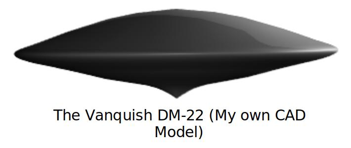
Size and shape were hard to determine, as a) it is hard to determine the outside of a body you are currently inside of (just like we cannot determine the shapes of our own bodies without a mirror, except for those parts we can see), and b) the distance between celestial bodies gave a distorted perception of size, particularly at the speeds I was travelling. In saying that though, I got the feeling of a sort of spinning top as a basic silhouette of shape (through my field of vision and based on what I could “feel”, just like one can “feel” their head is a certain shape without touching it). I am confident the above CAD model is a close representation of its shape, considering. The bottom point of the VDM-22 would be what I consider the standout feature, as I could feel this as being the main “limb” of the VDM-22. Most of the control points (the “nerves” of the craft) seemed to gather at this bottom point.
Based on the hangar length, and that the VDM-22’s width was almost touching each side of the launch “chimney”, then considering my perspective of the chimney whilst inside of it, then once again outside in space, I am guessing the diameter was somewhere around 20m. I consider this to be a less accurate assumption than estimating the shape as I had a limited frame of reference to work off. The movement of celestial bodies past the ship suggested the size was astronomically large, but again at those distances and speeds it becomes almost impossible to tell. Extrapolating from the idea I was able to eventually land on Mars, is suggestive the craft was much smaller than that particular planet. At the same time, using the atmospheric boundary of the same planet during landing also suggests it was bigger than conventional earth shuttles.
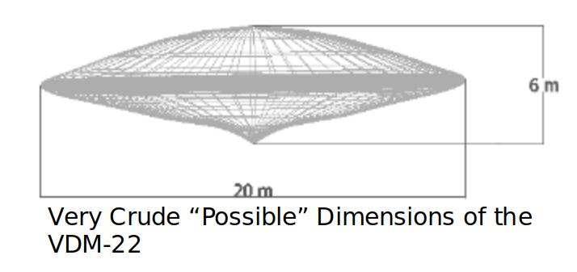
The “ears” of the VDM-22 body seemed to be some kind of telepathic transceiver that increased audible range to the point that atmospheric noise could be heard with crystal clear clarity from great distances. Noises very similar to those compiled by NASA on what planets “sound like” could be heard on approach to certain planets, which faded as one moved away from them. According to NASA these particular frequencies (before being manipulated by them so they could be heard by the human ear) sit somewhere within the 800MHz spectrum, suggesting this craft body allows the filtering of signals far beyond the 20kHz limit of the human ear. Through the use of the HUD, zooming in to a neighboring galaxy also allowed one to pin point the audio signals coming from that region of space. Interlaced throughout this white noise, in various star clusters, intelligent voices could be heard quite easily. It appeared that certain planets were also conscious (as if consciousness had taken up residence in them like I was taking up residence in this craft) and exhibited intelligence to the level they were able to seemingly communicate (which took the form of English, assumedly translated through the craft’s “ears”) with other nearby planets and me as I approached them. An apparent Martian intelligence was one such example that seemed quite dominant and “loud” and easily discernible even from deep space. Two way communication with these intelligences could be achieved through first zooming into their region of space and using thought as a transmission medium. This zooming feature allowed identification of planetary bodies to extremely high detail from vast distances over several hundred lightyears away.
It was also apparent that some of these planetary transmissions had been set up as beacons to provide navigational data to similar space craft that would be traversing the area.
I was also able to use a stellarium astronomy software that came with a telescope I bought, called Starry Night 8, to devise a very close simulated representation of some aspects of the experience, and derive from it interesting data in the form of star maps that allowed me to approximate in space I was, as well as speeds I was achieving with this craft. This simulation will be included in the aforementioned video along with animations to better show the process of how to merge ones consciousness with these type of craft.
The speeds of the VDM-22 can be broken down into 3 categories of operation: atmospheric, local space and outer galaxy speeds. Atmospheric was the initial speed upon launching from the facility tunnel perched on the top of an asteroid I tracked using Starry Night 8 to being somewhere near the Pawlowia Asteroid during the time of the experience. I have in my head (and I don’t know why) that the approximate length of the tunnel the VDM-22 was hangared in was between 32 and 36km in length (protruding directly into space). This length was covered in about 10 seconds, which equates to about a 13000km/hr initial “launch” speed and presented the hardest part to navigate, as I was very much aware there was limited clearance between the edges of my craft body and the tunnel walls (within a mere meter). Extreme focus must be given to propel the craft at this speed through such a confined space. I knew if I was out by even small degree, at that distance I would crash into these tunnel walls and the experience would end.
How to Achieve Flight Control of the Vanquish DM-22:
To understand how to gain operational control of the Vanquish DM-22, we must first delve a bit deeper into this idea that one experiences a detachment of the consciousness mechanisms from the interfaces of the human body that allow motor control over the limbs etc which can be directly ported over to a target space craft. I mentioned previously that consciousness whilst out of body (lucid dreaming, not astral projecting, as consciousness is still attached to an energetic body with the latter) is extremely versatile in its ability to adapt to its quantum environment. This should be taken as meaning that consciousness can exhibit an infinite range of movement and form whilst in this state, that does not conform to typical standards related to the physical plane. These mechanisms therefore can be considered as control points with an endless number of ways that they can be arranged. When locked within the body, these control points take the typical bipedal human form, which appears like a tree branch that extends out from the head, down both sides and branches off at the arms or the legs (I highly recommend vigourous study of the Kabbalistic tree of life, as it provides the template of consciousness whilst in human form, according to the students of it). If we consider a MO capped stick figured commonly used a basis for building CGI characters off the movements of real people, this acts as a good mock representation of these control points. We can then start to identify the crucial control points and designate them with specific alphanumeric characters:
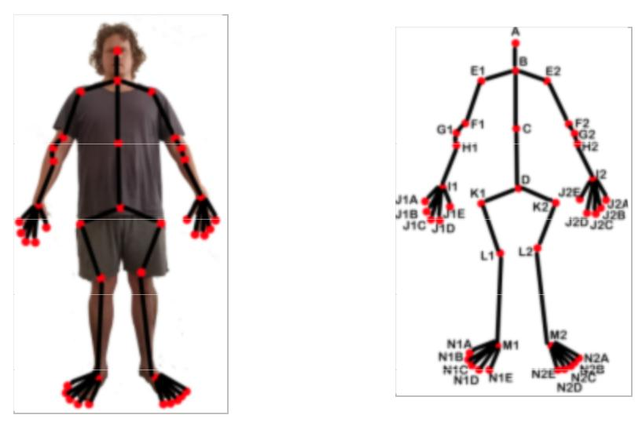
What we now have is a rudimentary map of the “quantum body” (my own terminology). This body should in no way be compared to the astral or etheric bodies, as it is really just a ball of energy without any recognizable form – our consciousness in pure consciousness state. What our quantum body map allows us is a means to conceptualise how these control points are reshaped according to the interfaces of whatever vehicle it is being adapted to. In the case of the interstellar craft I was lucky enough to pilot, this shape takes a similar form to the typical sitting lotus position many people use to engage in meditation, if only differing from the position of the hand control points that would equate to resting in the middle of the lap. If one takes our stick figure, arranges it into this position, and then compares it to the typical flying saucer shape, the similarities between the two, should immediately become apparent. This will give an idea of where the consciousness control points will “sit” within the craft that is being piloted.
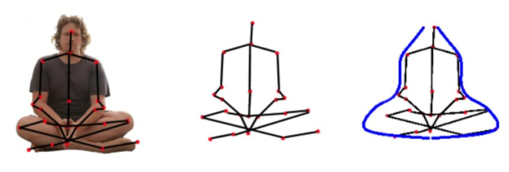
We can then equate specific gestures that are activated within our biological “meat suit” bodies courtesy of our consciousness stimulating these control points, with actual real time space craft controls. This is the key to controlling these craft. Effectively what you are doing is stimulating these same control points which are now tethered to different parts of the craft in question rather than your biological body. This is how I was able to propel this vehicle at incredible speeds into very deep space.
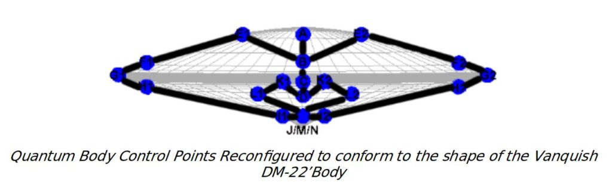
Through my experience piloting this craft I made the following observations mid flight on how control of the craft through these control points is realized. These determinations were made after going through a “calibration process” or “dance” by which I had to become acquainted with these gestures before I could properly fly the craft.
- The shape of the saucer has nothing to do with aero dynamics (which always eluded me due to the idea in the vacuity of space velocity is not effected by drag ); it has to do with the turning motion of consciousness within the craft. In the craft I was in, it was as if there was an invisible central axis running from top to bottom that was the main housing for my consciousness. An action comparable to turning my head to look in a certain direction was achieved by spinning consciousness around this axis in either a clockwise or counter clockwise motion. This allowed a 360 pivot and scouting of one’s entire surroundings without any actual physical movement of the craft being carried out. When propelling forward, turning of the vehicle was achieved by rotating consciousness around this axis, which was almost instantaneous. This allowed tight 90 degree bends to be achieved rather effortlessly mid flight.
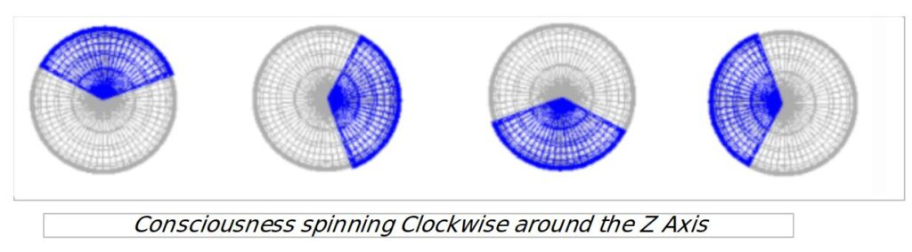
- As consciousness was spun around this central axis, the control points, which were embedded into walls of the vehicle, also spun with it.
- To move through the z axis, the control points of the head are used to what would equate to a looking up or looking down gesture, except that the craft never tilted as our head would do when making such a gesture. It always stayed in the same position relative to how consciousness was viewing (through the x/y axis) from within the central “cockpit”.
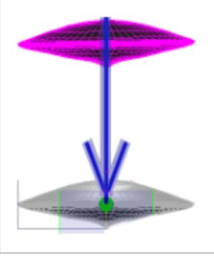
- To strafe left and right on the x axis we take the triangular arrangement of control points at the top of the forearm, the elbow, and the top of the bicep and push them out to the side, we wish to strafe to, like we are elbowing someone in the ribs. An elbow “jab” would equate to a quick evasive “jump” in that direction, whilst a prolonged “shove” would propel the VDM-22 quite a distance.
- A tilt of the craft (ie left or right) was achievable by using this same triangular arrangement of control points and bringing them down to our side (like we are making a chicken flying gesture). This would equate to a “barrel roll” around the y axis on whatever side the control points were on, allowing the ship’s relative plane to be changed.
- A forward propelling motion through the y axis equated to taking all control points above the pelvis (from the middle of through the arms and fingers to the head) and pushing them forward, like they comprised a joystick.
- Braking was achievable by pulling these same control points back to center.
- Reverse was simply the opposite of forward propelling through the x axis using the same control points, or a “lean” back motion.
- A detailed HUD map of current location was accessible through simple thought. This is hard to explain but it effectively allowed one to target areas of interest as well as zoom in incredible distances (into neighboring galaxies) in order to pin point travel destinations. It was effectively like switching from 1st person to third person view, except the craft was not visible during the process. My assumption is that it was some sort of controlled method of projecting consciousness into these regions, not comparable to astral projection.
- Targeting of areas of interest were achievable by using the control points equated with the fingers. Rapid, multiple target acquisition could be achieved similarly to playing a piano or typing on a computer keyboard when the HUD was activated (if you could fit it into the crammed space of your lap in the lotus position).
Close scrutiny of the above should allow one to conceptualize a near complete range of movement through all 3 axes and explain the evasion techniques seen by most UFO encounters by pilots. In addition to the above I also had an inkling that the control points of the toes (ie wriggling them) would activate the on board weapons arsenal, which I never bothered testing due to an inner knowing it would be quite devastating (beyond humankind’s worst weapons). This knowledge of having these weapons on board was comparable to the understanding one has male reproductive organs whilst sitting in this (lotus) position; one does not have to “take them out” or “play with them” to know they are there. I suspect it was some kind of laser system, but as I never used it, this is just a guess. I understood that I was a force to be reckoned with, that the composition of my space craft body was virtually indestructible and almost wished for another craft to engage me so I could so test out the defence capabilities of the VDM-22. I felt confidant that I was the biggest fish in the universe, and nothing was going to injure me.
Body Disconnection and Spacecraft Reattachment Process:
Importance must be given to the Hypngogic phase of the OBE, as there is a very small window of opportunity between properly disconnecting consciousness from the body, then attaching it to another usable vessel. Whilst hypnagogia can be considered as a cleavage point of consciousness, where it is “drifting” away from the physical body, but still attached to it, it does not equate to a full separation. Proper separation of consciousness from the body happens very quickly after consciousness inverts from its projected outward state which one experiences from hypnagogia (as well as from sleep paralysis) as a fast “sucking backwards” sensation in which it is pulled away from all hypnogogic imagery (what would happen if Han Solo slammed the millennium falcon in reverse whilst in hyperdrive). This inversion of consciousness is where the physical world becomes supplanted by the quantum one, where the attachment mechanisms of the body fall away and is the crucial point at which consciousness must be quickly tethered to its new container. In the case of my experience, this tethering was achieved by a sort of {non physical} hook that hung from the hallway roof that had the ability to pull my consciousness out of the body I was remote viewing from, and orient it in such a way that it aligned with the space craft cockpit (which was rotated 90 degrees in reference to the ground plane of the facility), and simultaneously merged me into it. It seemed it was by almost sheer luck the timing of this hook hitting me coincided with a conscious transition into the sleeping state, but it is more likely that the hook actually initiated the transition.
My suggestion here is that this hook is probably standard affair in many ET space craft docks, or at least those that exhibit an effortless ability to move their consciousness between different containers. An important take away from this is that hypnogogia can be used to target a specific craft through remote viewing practices.
Interestingly – and I am going to be bold with this statement – our models of neighboring galaxies seem to be somewhat inaccurate. According to this experience, I can say with 100% certainty that the Milky Way is not the largest galaxy in this region of space, and that we have a neighboring twin of roughly the same size that comes off perpendicularly to it.
The Experience:
The experience began as an involuntary remote viewing in hypnagogic trance. If I wanted to I could move my body and get up out of bed, but my consciousness was almost completely “away” and viewing from inside of a body that was walking around the launch facility, which took the form of a typical hospital insofar as layout and design was concerned. I was, evidently, on the very cusp of falling asleep. It is important in this stage of the veiwing, one intentionally refrains from exploring any random thoughts that present themselves, and just let the viewing unfold, as experience tells me that any focus away from the events unfolding in the viewing session has a tendancy to ruin it. I thus watched as this body walked about 50m down a hallway, past what appeared to be a cafeteria lounge, turn right through a door way and then walk down a neighboring hallway back from the direction I had just come. I passed what appeared to be two female reception staff to my left sitting at a table which appeared to have a doorway to outside behind it. The whole effort was quite casual, including the very brief conversation that was had with these reception staff; mine and my escort’s destination was through some blast doors that were located just up ahead. Upon reaching just in front of these blast doors the hook became evident. This was of non physical nature, but I could see it, not through the eyes of the body I was observing through, but through my own consciousness. It looked like a standard length of metal that protruded from the roof, and folded at a 90 angle towards the direction I was coming from – perfectly aligning with the centre of my forehead. The end of the hook seemed to taper into a sharp point.
I had barely had time to react before the head of body I was observing through walked was pierced this hook.
My consciousness immediately underwent the same transition into the sleeping state I have become accustomed to experiencing during my lucid dreams. I entered on into the same void space (written about elsewhere), only that this hook seemed to turn my consciousness 90 degrees upwards as it transitioned; if you picture Han Solo throwing his Millenium Falcon into a sideways back flip as he hits hyper drive in reverse, this is what it felt like; it takes much practice for one to find their bearings through such confusion, and is, in my opinion, the “fun” part of the whole affair. I immediately noticed a cluster of stars coming through what appeared to be a circular hole in this void space. My immediate realization was that this “void space” was some sort of non physical (quantum) hangar; I had just never bothered looking upwards in my other experiences with it. Ie, every time one enters into the sleeping state and into this void space, they are entering into one of these quantum hangars (even if they don’t remember it).
There was a slight period of distortion during the engagement period of my consciousness control points interfacing in within the craft body, similar to how when one first wakes up they are in a daze and their arms and legs are yet to work properly. After several seconds this haze wore off, and I was now completely attached and using this craft as if it was my own body, perceiving the physical, cylindrical, structure of the hanger. The interesting part of this haze period, was that the hangar seemingly went from being in non physical state to becoming solid as the haze wore off, and I could make out, with great vividness, tapered ridges running the entire length of the launch “chimney”. I can remember the roaring sound my thruster exhausts made as it echoed along these tapered ridges, as I propelled the craft forward, towards the opening with the stars, taking care not to move too close to the sides of the launch. This marked the hardest part of the flight; I was aware that any slight movement or twitching of the control interfaces would crash the craft into this chimney, so particular attention was paid to slowly accelerating forward until I was confident I wasn’t going to drift into it. At the same time, I had launch protocols being relayed to me via telepathic means by an unknown party, and I could feel their presence through telepathic means (not describable). A few seconds later I arrived at the opening and shot out of the chimney into space where I could see, in very vivid detail a ring of asteroids circling our sun. These asteroids looked like wet rocks glistening from the rays of light of the sun that were hitting them.
Once in open space, I underwent the calibration process to better get acquainted with the consciousness control points and how they would move the craft. This calibration process was a few minutes of me “dancing” around in space doing barrel rolls and amateur flips as if I was taking a car out to a parking lot to learn how to drive it properly. I am therefore quite sure in my assessment of the above control point manipulation to space craft operation criteria; I had to run myself through it before I could properly control the craft; it was like stretching ones limbs before playing a football game to make sure they work properly. The entire time I was aware of the base launch facility beneath me perched on a small asteroid. The facility appeared somewhat like it was made of brick work (something I found curious given its location in the middle of space) and was probably about fifty by one hundred meters in area, several stories high. The launch tunnel was several tens of kilometers in length.
After a quick tour of this asteroid ring, pin pointing earth, I decided I wanted to get away from these asteroids into a much more open area so I could test this craft’s speed capabilities. I had the inner knowing that this particular craft was the Bugatti Veyron of space (ie, engineered for speed); this understanding was akin to the intimate understanding one has of their own body and it’s capabilities and knowing that a lethargic, heavy weighted body is unlikely to perform as well in a 100m sprint than a more agile one. I just knew, this craft body was designed to be “fast”, and I was itching to see what it could do.
Using starry night software I was then able to simulate a very close representation of the time it took to fly past Jupiter and Saturn (note that in the simulation these planets appear further than I was to them because of lack of control I have over that particular program; in the experience these planets were much bigger, taking up almost all of my viewport, which I assume would mean the speeds to be somewhat faster, as I would have been covering greater distances at the same time). According to starry night 8, this would equate to an approximate acceleration of this craft from a standstill to about 4 Astronomical Units (roughly 598,000,000km) in 2 seconds; 4AU to 250ly/sec (23,652, 000, 000, 000, 000km) within 30 seconds. The region close to the location of the Magellanic clouds was reached within 1 minute of burning with barely any effort, in which I assume I was travelling somewhere near the 250ly/ sec mark. The simulation is a very close representation as to what I witnessed and how planets and stars “floated” past me during the experience. Stoppage from any of these speeds was instantaneous (no coasting or wind down), from the moment the braking control points were stimulated. As one can see, even at initial launch speeds, this craft is capable of flying pretty fast – faster than photonic based light, whilst out of atmosphere, that is for sure. The simulation from finishing the calibration process to entering into the nearby Sagittarius Galaxy can be considered 99% exact to how I experienced it, with a short period of total darkness coming out of the milky way before entering into the next galaxy., taking probably a few more seconds in actuality.
Coming out of the Milky Way, and entering into this darkness, I then turned around (spun my consciousness around the central axis of the craft), which is when I noticed two twin sized galaxies arranged perpendicular to each other. A period of disorientation occurred in which I did not know which exact one it was that I had come from.
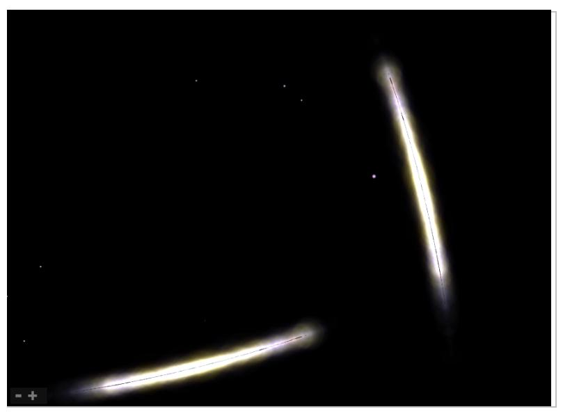
In the bottom galaxy, I noticed a large anomalous black hole petrusion taking up about a third of the entire galaxy, spanning from one edge to other, so proceeded to fly over the top of the pancake to get a better view. This black hole I identified as being part of the anomaly I have written about elsewhere (consciousness disassembler I have experienced during prior OBEs). My suspicions are that from our vantage point on earth much of the light from this larger neighboring pancake’s stars is being swallowed by this anomaly which distorts our perception of this galaxy and makes it look much smaller than it really is. I am aware radio emissions are used by astrophysicists to map areas around black holes, but this particular area was somewhat silent around this anomaly (remember, my audible range was several hundred MHz wide, possibly even wider, as opposed to human hearing which peaks at 20kHz), suggesting this anomaly is also capable of swallowing radio frequencies. At the cracks of this anomalous protrusion were what looked like bits of sea foam being brightly illuminated by nearby stars, which I assumed to be left over remnants of other stars that this thing had swallowed after it had spat them out.
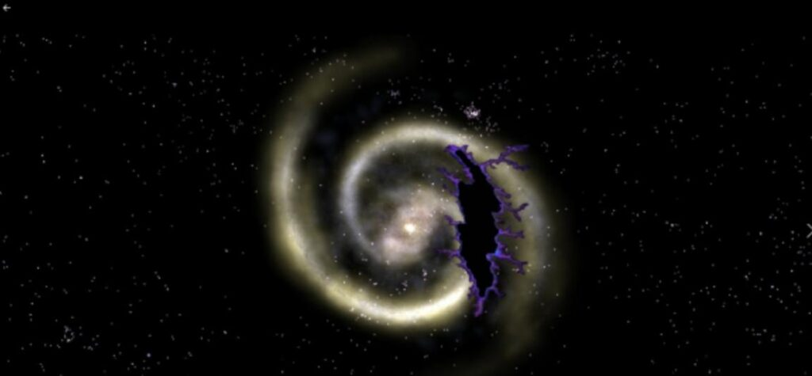
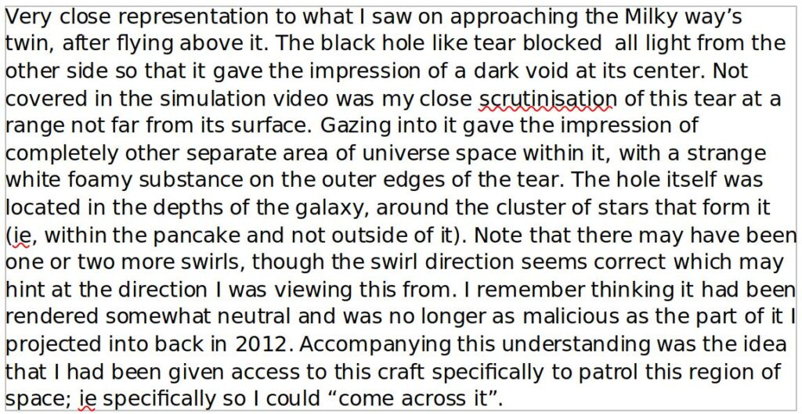
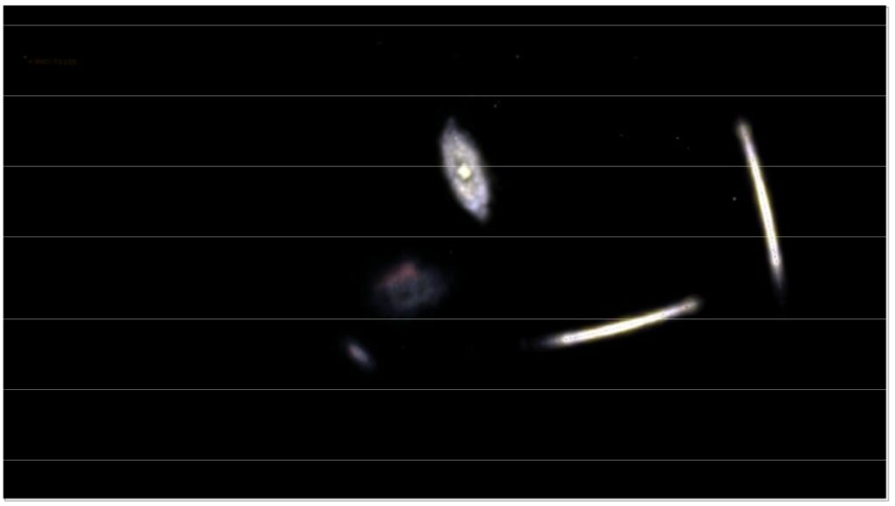
Using starry night, and trying to ascertain the relative location of this galaxy from the apparent sizes of galaxies neighboring the Milky Way at different angles, my conclusion is that this close twin is located in the very same region of space that houses the small and large Magellanic Clouds. My suggestion here is that the Magellanic Clouds are actually one larger galaxy which has been.
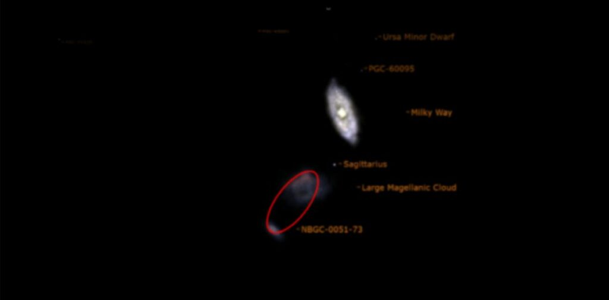
“cleaved” into two parts through this anomaly, which distorts our perception of them from earth, making them appear as two different clusters. I am hoping that future advances in space exploration will one day provide validation of my experience through the finding of evidence of this supermassive black hole anomaly.
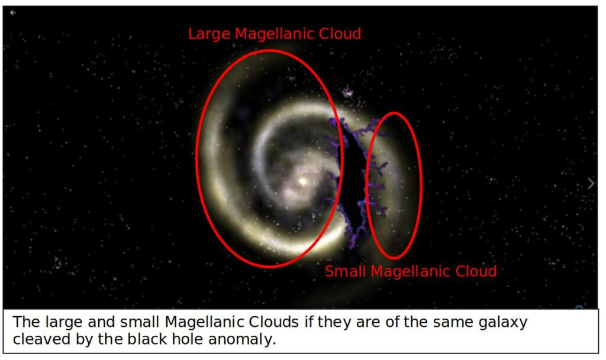
Regardless, after pondering this anomaly for a few moments, and being somewhat concerned of its proximity to earth, I then penetrated out into very, very deep space, to the point I was left floating “in the middle of nowhere”. This would have equated to somewhere near the edge of the cosmic web (the real one, which covers a far greater distance than the known one, judging from what I was witnessing, and comparing to the starry night simulation software).
It was here I tried to establish telepathic communication with the Elder Guardians, who I knew existed very, very far beyond this cosmic web. This was the prime intention of what I wished to achieve with this experience. Up until that point I had been quite active in my exploration around the universe, but it was at this point that I simply just stopped and floated in the middle of no where and the realization hit me that I was an almost unfathomable distance from my physical body back on earth. A curious discovery was made out here; even at that vantage point, I was not able to receive more than a broken transmission that consisted of mainly white noise in between a few “Hello, can you hear me’s”, which suggests to me that there is a barrier that “absorbs” (or more correctly, introduces interference at) even the frequencies associated with telepathic thought transmission somewhere near the edge of the universe.
Shortly after this communication attempt was aborted, the Martian Intelligence spoke directly to me, the amplitude of its “voice” coming through extremely prominently and clear even from this deep region of space. It had evidentally “spotted” my presence flying inside and out of the milky way, and was curious about what I was up to. I had been aware of this intelligence from breaching the outer edges of the milky way, but had not paid much attention to it until it decided to specifically address me. How this was done was hard to explain, but it was like someone shouting at you from a distance, and saying “yes you” when attention was given to the voice. This attention was achieved through the aforementioned “zooming” in to the region of space this intelligence was coming from. The initial thought was that, to a human, this intelligence would have been quite sinister and dangerous, though from the comfort of my space vehicle I thought it’s attempts at coercion to be quite lame, like an adult trying to scare a child who has already called their bluff. I proceeded with extreme caution at its suggestion I come closer to it as it had “something I needed”. Through my targeting apparatus I was then able to run a scan of the planetary body this intelligence was inhabiting, which I identified from its red patterns as being Mars, or a very similar looking planet (galaxy and solar systems were still hard to determine even with this apparatus, unlike my simulation software I did not have the luxury of labels I could use for identification). I was basically operating as a police officer would, going through basic protocols to make sure I was not going to be ambushed.
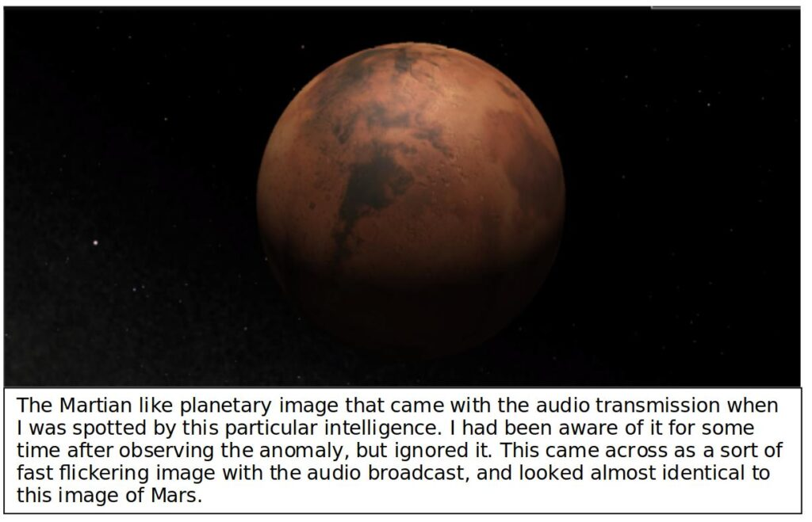
Once the Mars like planet had been identified, I accelerated forward to it and came within its atmosphere within about 10-20 seconds. Note, that in the simulation, this is covered much quicker on account for the limited way I had to show the targeting of Mars from deep space. However, the part where I look around trying to pin point where this intelligence was coming from is fairly accurate, although actual movement was more robotic. Atmospheric penetration of the Martian like planet was different to that outlined in the simulation, and involved a forward acceleration into a region that was darkened by the lack of sunlight, close to where daylight would have been breaking. This forward acceleration eventually allowed me to get close enough to gently bring my craft body down to almost ground level, in a rocky outcrop with several cliffs surrounding me. There appeared to be a violent dust storm that made visibility of anything but the nearby cliff faces hard to make out. Even upon landing the intelligence still beckoned for me to follow it into this dust storm, which I was very convinced by this point was a trap.
I decided that the wisest move would be to report my findings of this alien intelligence back to the launch facility base on the asteroid near Pawlowia. Shortly after this, my consciousness was disconnected form this space craft body and I awoke in bed, suggesting that this craft may have been left on whatever planet this was I was on.
Determinations from the experience:
- ET spacecraft can 100% be “hijacked” through using techniques commonly involved in initiating out of body experiences. Remote viewing practices can be used as an effective means to target these craft.
- There is a launch facility for these craft set up in the asteroid belt, which seems to be close to where the asteroid Pawlowia was on the 27th June 2022.
- This facility exhibits human like construction methods (brickwork) and is populated by beings seemingly indistguishable from humans.
- These spacecraft have the ability to up scale the bandwidth of frequencies that can be heard during their piloting. There seems to be a common “channel of communication” through this entire bandwidth.
- Operation of frequency transmission is different to common methods used on earth; whereas we tend to use a single frequency to modulate the information onto, typical signal transmission from these craft seem to happen simultaneously over this entire frequency range, which has a bandwidth several MHz wide.
- The instantaneous transmission speeds through vast distances of space suggest that these transmission are operating beyond those restricted to the speed of light. Instantaneous communication from two different points, many millions of light years apart also suggest a different means of signal propagation, as radio waves are limited to the speed of light (minus 5% under earth atmospheric conditions)
- Planetary bodies can seemingly exhibit intelligence at a level that they can be communicated with by not only other planets over great distances, but also by intelligences passing by in some of these space vehicles. My assumption is that this intelligence really comes from an extremely high powered transceiver stationed on these planets by other ET races, in which the planet itself becomes part of the transmission component. I suspect ET races are actually using the planets in some way as an amplification medium of the signals on this telepathy channel.
- The most dominant of these transmission stations comes from a planet that either is Mars or looks very similar to it. This transceiver, from whatever its location, can propagate signals out into the edge of the cosmic web instantaneously, with effectively 0 attennuation. Again, this alludes to the idea that these are not typical electromagnetic based radio signals we use on earth, given the obvious bypassing of the inverse square law. The intelligence behind these transmissions is extremely hostile and malicious as far as human standards go, but somewhat inferior when operating from one of these vehicles, suffering from an obvious cowardice.
- Some planetary bodies are being used as navigational beacons for these type of space craft. These transmission beacons cover radiuses of several light years, or in the case of the Martian like planet transceiver, several million lightyears, but can be pin pointed from distances very far away from them through directional receiver (audio telescope) capabilities of these craft. This means that sounds from these beacons will not be heard until passing into their broadcasting range, unless these areas are specifically targeted by the craft’s audio telescope zooming capabilities.
- Earth propagates a signal that is very noticeable throughout, at least, its own solar system. There is no way it can remain hidden to outside craft of similar capabilities given the loudness of this signal.
- The regions inside and outside of the Milky Way are teaming with “intelligent chatter” on this telepathic line. This comes across like being in a crowd of people all speaking at once, until the audio telescope is used and zoomed into a particular sector, where signals in that sector get louder and drown out the crowded noise. In the case of the Martian transceiver, it was essentially like being shouted at by someone on the opposite end of the universe, the loudness of the shout being very obvious.
- There is a boundary out past the cosmic web in which signals from this telepathic channel are broken and experience a high level of interference. Estimated distance from earth to this boundary is in the “trillions” of lightyears or more.
- There is a neighboring pancake galaxy of similar size to the milky way that comes off perpendicular to it at an approximate distance similar to the Magellanic Clouds. A large part of this galaxy is taken up by a massive anomalous black hole that swallows light and radio frequencies around the site. An ocean of foamy white substance lines the edges of this “crack”. It is also possible this galaxy with the anomaly is the milky way itself. Past experience with this black hole anomaly suggest it exists outside of known time and space, originates from outside of the telepathic signal boundary, and can rip consciousness apart. From those experiences, it seemingly has a direct relationship with the amnesia introduced into our consciousness that prohibit us from retaining memory of past lives.
- The universe is spherical, and does not feel a big enough a place to explore when using one of these craft.
- Through directional audio telescoping capabilities and relevant speeds of the craft I piloted, exploration into useful areas and galaxies for resource gathering purposes could be carried out extremely easily and efficiently in a very small amount of time. I estimate, that if humans had consistent and unfettered access to this technology, they could accurately map the entire universe within a single year.
It is my belief that it is possible to move consciousness in a similar manner to what is done via lucid dreaming at the moment of death. It is my intention to try and move my consciousness into one of these space craft suits at the expiration of this physical body, in an attempt to provide some form of validation of my claim that techniques used to induce OBEs can be used to hijack and pilot these craft. If I am successful in my endeavors, then I will use this opportunity to provide not only evidence of the existence of these craft, but that my curriculum for piloting them is at least somewhat usable. Therefore, any sightings of a craft similar to the Vanquish DM-22, distinguishable by the pointed “spinning top” bottom, over areas or during events with direct significance to my life, such as properties I owned, burial site of my body, etc, can be taken as a visitation from the same consciousness that piloted the body used to write these very words. I am certain that direct telepathic communication, along the same channel used by this craft, can be made through broadcasted thoughts during hypnagogia or whilst in the void space after a conscious transition into the sleeping state. I recommend using this avenue for any parties interested in trying to contact my consciousness post humously.
A more thorough explanation of visiting schedule will be given to my Ordo Occultum Astrum once it has been worked out.